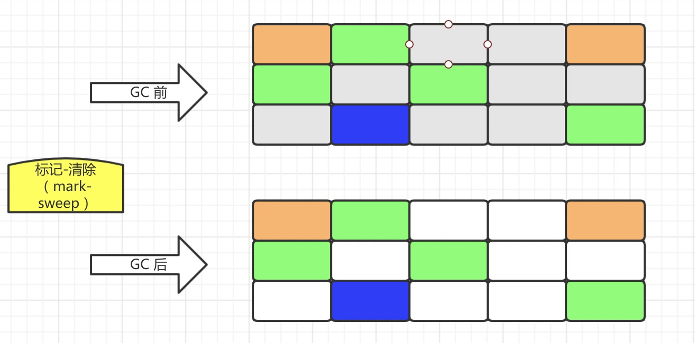
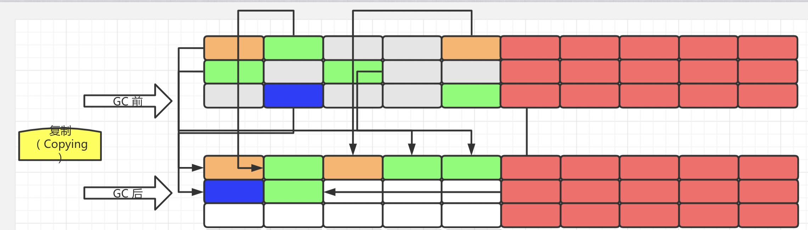
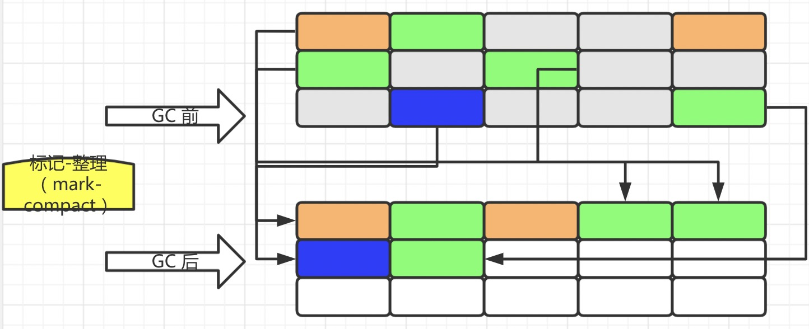
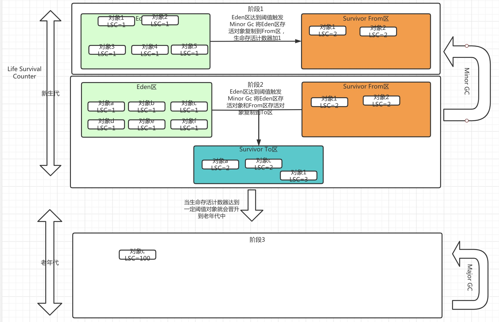

GC机制
/ / 点击 /垃圾回收机制是JVM持续运行的关键，当JVM在运行过程中会产生很多“无用”的对象，如果没有及时GC就会导致我们虚拟机运行效率的降低，从而引发系统的异常。在运行时数据区中程序计数器、虚拟机栈、本地方法栈是线程私有的，不需要进行垃圾回收。方法区和堆区线程共享需要进行垃圾回收，堆是Java虚拟机进行垃圾回收的主要场所，其次要场所是方法区。
垃圾回收分两步找到垃圾和回收垃圾，一般查找垃圾有两种方法引用计数法和可达性分析算法。
引用计数法就是给每个创建的对象添加一个引用计数器，当有一地方引用它时引用计数器加1，当有引用消除时引用计数器减1。当引用计数器等于0时就表示该对象可收回。标记计数法存在的问题时当有两个或几个对象互相引用时，它们的引用计数器永远不会为0，就永远不会被回收。
可达性分析算法（根搜索算法）以根对象作为根结点进行搜索，当有对象不可达时就认为该对象可回收，根对象一般指虚拟机栈中的引用对象、本地方法栈中JNI的引用对象、方法区中运行常量池中的引用对象、方法区中静态属性引用的对象、运行中的线程、由引导类加载器加载的对象、GC控制的对象。
垃圾回收算法有：
1.标记-清除（mark–sweep）
标记所有需要回收的对象，之后统一回收。这是最基础的算法，后续的回收算法都是基于这个算法扩展的。缺点明显效率低，产生大量碎片。

2.复制（copying）
将内存空间划分两块相等的区域，每次只使用其中的一块区域，垃圾回收时遍历正在使用的区域内对象，将正在使用的引用对象赋值到另一块区域。每次垃圾回收时只处理正在使用的对象，赋值成本低，赋值过去会进行整理，不存在内存碎片。缺点是需要双倍的内存空间，以空间换时间。

3.标记-整理或压缩（mark–compact））
结合了复制和标记清除的优点，第一步标记所有需要回收的对象，第二部回收对象，并对存活对象进行整理（压缩）。

4.分代收集算法
根据对象生命周期的不同将对象分为新生代和老年代对象。新生代对象一般又分为Eden区(伊甸园)和两个Survivor区。新创建的u对象都在Eden区，当Eden区内存到达阈值就会出发Minor GC，这是就会把Eden区中的对象复制到其中一个Survivor区中，此时这些存活对象的生命存活计数会加1.这是Eden区空置，Eden区继续存放新创建的对象，当再次触发Minor Gc时，将此时Eden区的存活对象和之前一个Survivor区的存活对象复制到另外一个Survivor区中，同时它们的生命存活计数器加1，这个过程持续发生，当对象的存活计数器达到一定的阈值后触发“晋升”，新生代中的该对象就被放置到了老年代中。
老年代中的对象经过多次的GC就会是生命周期很长的对象。当老年代的内存达到阈值时触发Major GC，这是采用标记-整理或压缩（mark–compact）算法。
